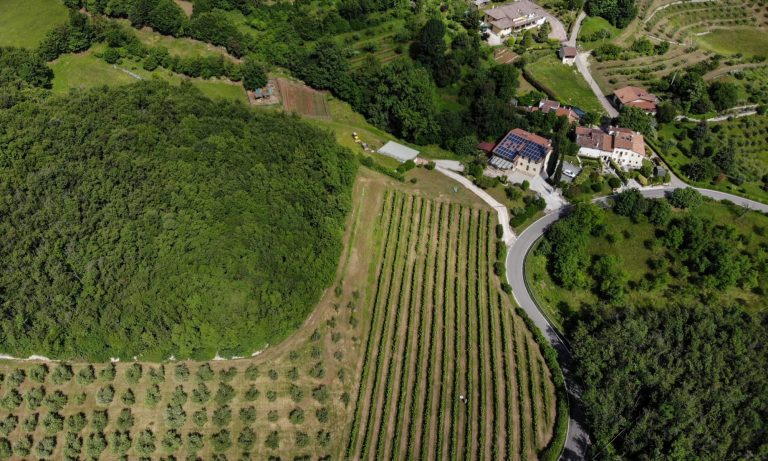
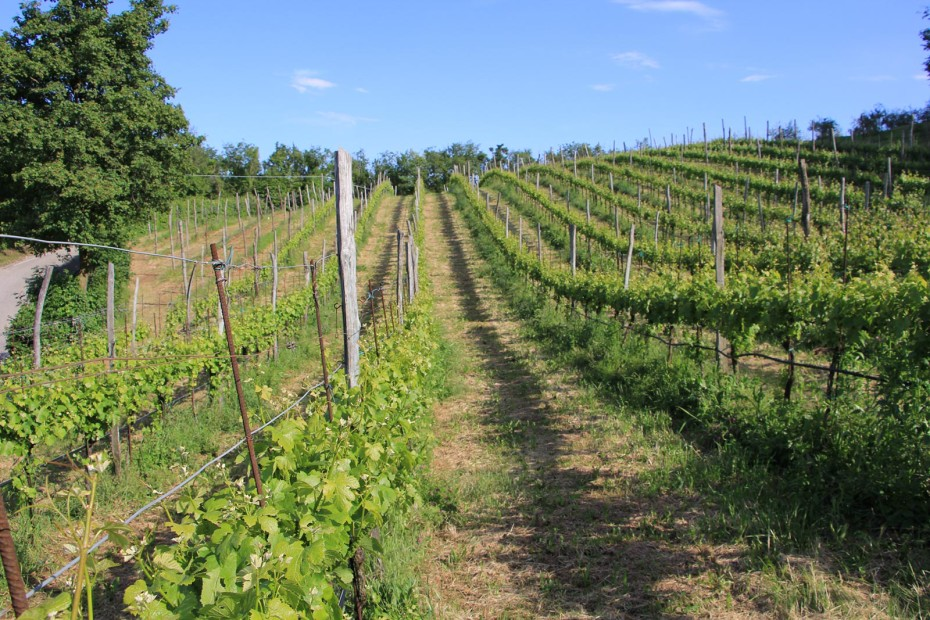
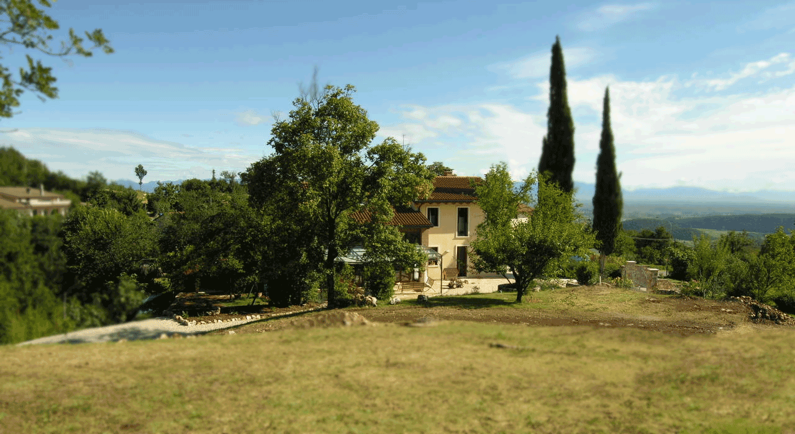

Agriturismo Marani
Immersa nel verde dei Colli Berici, a pochi chilometri da Vicenza, questa abitazione è stata recentemente ristrutturata con cura ricavandone quattro stanze, tutte con bagno, e piacevoli spazi comuni.
Vi si respira un’atmosfera familiare e serena, grazie anche all’attenzione riservata all’arredamento e ai particolari. La prima colazione e l’eventuale cena su prenotazione invitano alla conoscenza e alla degustazione di quanto prodotto dall’azienda agricola stessa.
Punto di partenza per piacevoli escursioni sulle colline del Veneto, l’Agriturismo Marani permette di raggiungere rapidamente le bellissime Venezia, Verona e Padova, nonché di scoprire centri minori dall’incanto dimenticato.


